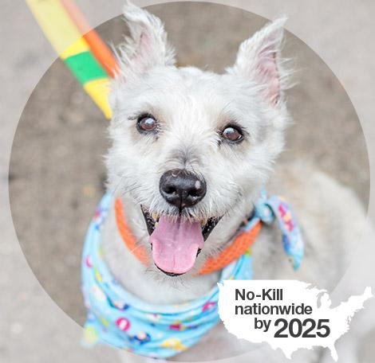
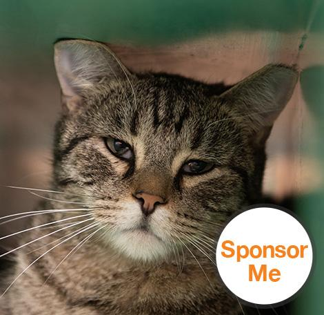

What is animal welfare?
Animal welfare means how an animal is coping with the conditions in which it lives. An animal is in a good state of welfare if (as indicated by scientific evidence) it is healthy, comfortable, well nourished, safe, able to express innate behavior, and if it is not suffering from unpleasant states such as pain, fear, and distress. Good animal welfare requires disease prevention and veterinary treatment, appropriate shelter, management, nutrition, humane handling and humane slaughter. Animal welfare refers to the state of the animal; the treatment that an animal receives is covered by other terms such as animal care, animal husbandry, and humane treatment.1 Protecting an animal's welfare means providing for its physical and mental needs.

Ensuring animal welfare is a human responsibility that includes consideration for all aspects of animal well-being, including proper housing, management, nutrition, disease prevention and treatment, responsible care, humane handling, and, when necessary, humane euthanasia.
There are numerous perspectives on animal welfare that are influenced by a person's values and experiences. There are also various means of measuring animal welfare, including (but not limited to) health, productivity, behavior, and physiological responses.
The American Veterinary Medical Association has defined its commitment to animal welfare through the adoption of the following Animal Welfare Principles that serves as guidance when the Association develops policies and takes action to ensure the welfare of animals.
The responsible use of animals for human purposes, such as companionship, food, fiber, recreation, work, education, exhibition, and research conducted for the benefit of both humans and animals, is consistent with the Veterinarian's Oath.
What is animal welfare committee?
Activities of the Animal Welfare Committee are guided by the AVMA Animal Welfare Principles and are directed toward meeting the association's strategic goals and objectives for animal welfare as established by AVMA leadership.
-
~Proactively identify and prioritize animal welfare concerns and opportunities
-
~Critically evaluate related information from individuals and groups internal and external to the AVMA
-
~Use that information to determine which issues fall within the role and influence of veterinary medical professionals and what actions or activities may be appropriate responses to those animal welfare concerns and opportunities.
The committee has 18 members and alternates representing: American Animal Hospital Association, American Association of Avian Pathologists, American Association of Equine Practitioners, American Association of Industry Veterinarians, American Association of Feline Practitioners, American Association of Bovine Practitioners, American Association of Swine Veterinarians, American Association of Small Ruminant Practitioners, American Association of Zoo Veterinarians and the American Association of Wildlife Veterinarians, American Society of Laboratory Animal Practitioners, Veterinary Medical Association Executives, Association of American Veterinary Medical Colleges, Association of Shelter Veterinarians, Association of Avian Veterinarians, American Association of Fish Veterinarians, humane or animal welfare organizations, at-large position, and Student AVMA. Committee members communicate and are actively engaged with the organizations they represent and, as such, bring a wealth of scientific expertise and pra ctical experience to the table.
Sponsor a pet 
When you sponsor a homeless pet at Best Friends Animal Sanctuary, you help that animal in ways that can’t even be counted.
You can sponsor a dog, cat, horse, pig, goat or bird from the Sanctuary. Select a category below to read great stories about the animals and find the perfect match for your gift recipient. With more than 1,600 animals currently being cared for at the Sanctuary, you’ll be sure to find the perfect match for everyone on your list. You can sponsor any adoptable pet at the Sanctuary, a special place that is a home between homes for more than 1,600 animals on any given day. Pets here stay as long as the need is there, receiving plenty of love and companionship until they find loving families of their own.
Animal sponsorship helps animals find loving homes, provides low- and no-cost spay/neuter programs, supports legislative and public education efforts all across the country that save the lives of pets ― and more.
Pet sponsorship gifts support the work of Best Friends Animal Society and help Save Them All. To assist the greatest number of animals in need, and to make sure your gift does the most good, your donation will be used in combination with other sponsorship gifts to help save the lives of animals.
Sponsorship gifts support the work of Best Friends Animal Society and help Save Them All. Every day, nearly 2,200 dogs and cats are killed in shelters across the country, but together we are changing that. Your gift helps animals find homes, get medical care, and receive spay/neuter. It also supports legislative and public education efforts all across the country that save the lives of pets, and more. In order to make sure that your gift has the greatest impact and helps save the maximum number of lives, its use will not be restricted to the individual care of your sponsored animal, but wherever it is needed most.